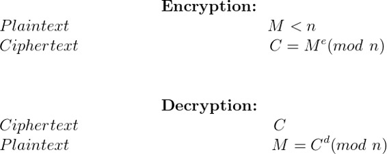

Public Key Cryptography is also known as Asymmetric Cryptography is the type of cryptography which involves the usage of two keys namely Public Key and Private Key. The Public Key of the receiver is used to encrypt the plaintext by the sender while the Private Key of the receiver is used to decrypt the encrypted message and hence can be decrypted only by the intended receiver.
RSA (Rivest Shamir Adleman) is a public key cryptographic algorithm in which key generation is based on the product of two large prime numbers p and q resulting into N i.e. N = p × q. The crux of the security of this algorithm is that the attacker needs to first find out p and q by factorization of N which takes place in exponential time. Research shows that this can take more than 70 years if N is a 100 digit number. Due to this complexity, the attacker is unable to find the decryption key d because d depends on p, q and encryption key e. So even if N and e are known to the attacker, d cannot be computed.
Current Scenario of RSA
As of April 2017, RSA-2048 may not be factorizable for many years to come. Moreover, the recent Ransomware virus also uses RSA-2048 to encrypt files on the infected system. These files cannot be decrypted without the availability of the decrption key because such a large key cannot be factorized. Hence, RSA-1024 and RSA-2048 are now being popularly used for secured communication.


The above images show the 3 different phases of the RSA algorithm. Considering that a prime number generator generates 1024-bit primes p and q, the resultant N will be a 2048-bit number. Since all modulo operations performed during encryption and decryption are with respect to N which is a 2048-bit number, the software implementation of this can be time-consuming. Moreover, the unsigned long long int data type of C restricts computations to 64-bit numbers. In order to support the generation of large-sized keys as a requirement of RSA algorithm and fast computation of encryption and decryption involving large size modulus, a library called the GMP (GNU Multiple Precision Arithmetic Library) can be used. The use of this library will allow the entire RSA algorithm to run on a simple 64-bit operating system thereby avoiding the use of super-computers or high configuration hardware devices.
What is GMP?
GMP is an open source library that allows arithmetic computations to be performed on signed integers, rational numbers and decimal numbers without any practical limitations on its precision apart from the configurations of the machine it is run on. This library is used during those arithmetic calculations that involve very large or high precision numbers, most of which are used in cryptographic algorithms. The benefit of using this library is that it provides support for arbitrary precision numbers, the size of which is not known prior to execution of the program. The basic interface provided for the use of this library is for the C language. But wrappers exist for other languages including Ada, C++, C#, Julia, OCaml, Perl, PHP, Python, R, Ruby and the Wolfram Language.
As an example, a C program that performs the multiplication of two multiple precision numbers is mentioned below.
Note that the gmp.h file needs to be included as a header file. The compilation of such a program on a Unix system can be done using the command
gcc program_name.c -lgmp
#include <stdio.h>
#include <gmp.h>
int main(void) {
mpz_t x, y, result;
mpz_init_set_str(x, "7612058254738945", 10);
mpz_init_set_str(y, "9263591128439081", 10);
mpz_init(result);
mpz_mul(result, x, y);
gmp_printf(" %Zd\n"
"*\n"
" %Zd\n"
"--------------------\n"
"%Zd\n", x, y, result);
/* free used memory */
mpz_clear(x);
mpz_clear(y);
mpz_clear(result);
return 0;
}
Coding the RSA Algorithm
A C program depicting the working of RSA algorithm with small prime numbers is available here. In order to understand the working of the real RSA algorithm with the use of large prime numbers, a C code using GMP library is available here. This program implements RSA-1024 by generating random prime numbers p and q of 512 bits each followed by encryption and decryption. Here, the variable MODULUS_SIZE is assigned the value 1024. This value can be changed to 2048 to generate RSA keys of 2048 bits.
Applications
RSA algorithm has been widely used in secure network communications and secure transactions for many e-commerce applications. Other applications include voice communication over low bit rate channels, in secure key exchange for even high-speed IPSec, credit card details when communicated to online merchants etc.